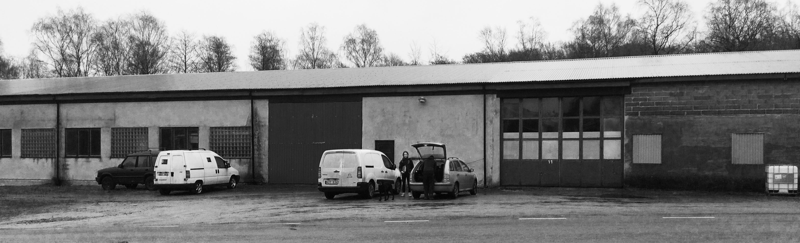

Sågen i Svensköp
Crowd-funding insamling
Så här mycket pengar har kommit in och utlovats än så länge:
- Mottagna donationer
- Utlovade donationer
- Mottagna lån
- Erbjudna lån
- Osäkra och tillfälliga lån
- Saknas
Siffrorna här uppdateras (åtminstone) varje tisdag. Målet är att nå minst 1 240 000 SEK mottagna medel innan 1 mars 2024.
Sågen i Svensköp
Sågen är en gammal industrilokal i Svensköp (i Hörby kommun) som har blivit en jämlik och solidarisk plats för fri kultur.
På Sågen finns det verkstäder, en kulturförening, ett galleri, en riktig biograf, en scen och en massa annat! Det finns en ekonomisk förening vars medlemmar driver Sågen. Det finns också en separat kulturförening som anordnar kulturarrangemang och är öppen för allmänheten. Välkommen att bli medlem i Kulturföreningen Sågen!
Köp av fastigheten
Än så länge har Sågens lokaler hyrts från en privatperson men nu blir drömmen om att köpa Sågen äntligen verklighet! Kontraktet är skrivet och köpet kommer genomföras 1 mars 2024!
Fastigheten kommer att köpas och förvaltas av Toffelfabriken i Svensköp Ekonomiska Förening som är den förening som i hitentills har hyrt Sågen och vars styrelse består av de stadigvarande hyresgästerna i huset.
Vi behöver nu snabbt få ihop de 1 240 000 SEK som behövs för köpet (1 150 000 + 90 000 för lagfart).
Hjälp oss att nå målet! Tillsammans säkrar vi framtiden för fri kultur i Svensköpsbygden!
Crowd-funding
Med start 24 januari 2024 tar vi emot donationer för att köpa Sågen.
Vi har valt att genomföra vår crowdfunding via Swish-donationer till Kulturföreningen Sågen. Kulturföreningen kommer i sin tur att donera till den ekonomiska föreningen som ska köpa och äga fastigheten. På detta sätt undiker vi administrationsavgifter och att en andel försvinner till crowdfundingtjänster. Maila oss gärna om du vill göra en större donation som banköverföring.
Swisha ditt bidrag till 123-334 57 17 och skriv "Donation till Sågen" i meddelandet.
Crowd-lending
Vi förväntar oss såklart inte att få in över en miljon i donationer. Vi söker därför även lån inom vårt community.
Har du möjlighet att låna ut belopp från 10 000 SEK under flera år för att göra detta möjligt? Berätta om dina möjligheter att låna ut till Sågens ekonomiska förening via vårt formulär så hör vi av oss till dig! Du kan också maila oss direkt på mailen som finns längst ner på sidan.
Dokument
Stadgar för Sågens ekonomisk förening: "Gamla Toffelfabriken i Svensköp Ekonomiska Förening".
Värdering av fastigheten som gjordes 2020 av den ekonomiska föreningen.
Kontakt
Styrelsen till Sågens ekonomiska förening "Gamla Toffelfabriken Ekonomiska Förening" kan kontaktas på:
This is a low-tech, minimalist, static site website without trackers, cookies or unnecessary code.